You know that feeling the second you step into a beach house, relaxed, breezy, unmistakably coastal, even before anyone mentions the ocean view. Getting that same feeling at home doesn't require an actual beachfront property or an unlimited budget.
It just takes a handful of the right choices, used with some restraint. Coastal design was never about recreating a beach house down to the last seashell.
It's about capturing a feeling, light, natural materials, soft texture, and knowing exactly when to stop before it tips into theme-park territory.

Why Coastal Style Is So Easy to Get Wrong
The line between a genuinely coastal room and a souvenir-shop living room is thinner than it looks. Both reach for blue, both reach for shells, both reach for rope and rattan. The real difference comes down almost entirely to restraint.
Every idea below works better with less of it, not more. None of them need a full renovation either. A color shift, a textile swap, or one well-chosen plant can move a room noticeably closer to the look without touching a single wall.
11 Coastal Living Room Ideas Worth Trying
1. Fix the Floors First
The best coastal decor in the world can't save a floor that still reads like rental carpet from the nineties. The floor needs its own upgrade, or at least a smart disguise, before anything else really lands.
Whitewashed wood or faux-wood vinyl planks, light oak or bamboo for that sun-bleached look, and layered rugs over whatever can't be changed all solve the problem at different budgets.
When none of that's realistic, a single jute rug thrown down over the existing floor does more than people expect, and it works almost every time.
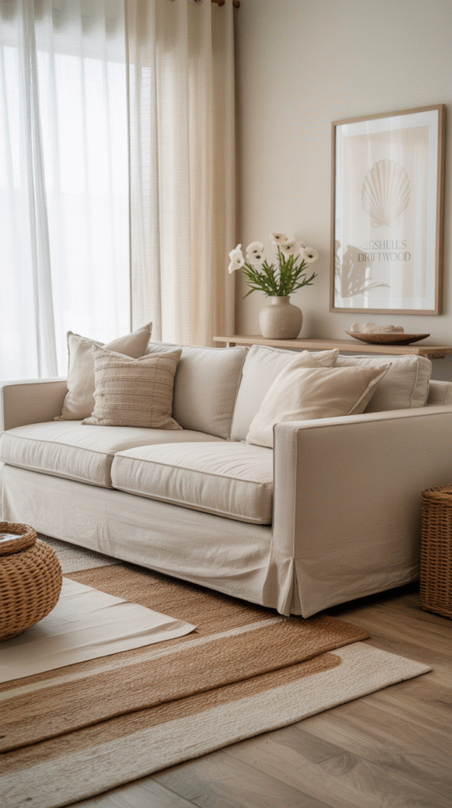
2. Add a Touch of Coastal Glam
Beachy doesn't have to mean basic. A little glam, layered carefully on top, elevates the whole room without fighting the relaxed base underneath it.
Brushed gold or brass accents on drawer pulls, lamps, or side tables, a pearlescent finish on a vase or mirror, and a velvet pillow in a soft ocean hue all work once they're balanced against the room's natural materials.
Keep the shine to a minimum here. The target is a beach house owned by someone with taste, not something trying too hard to sparkle.
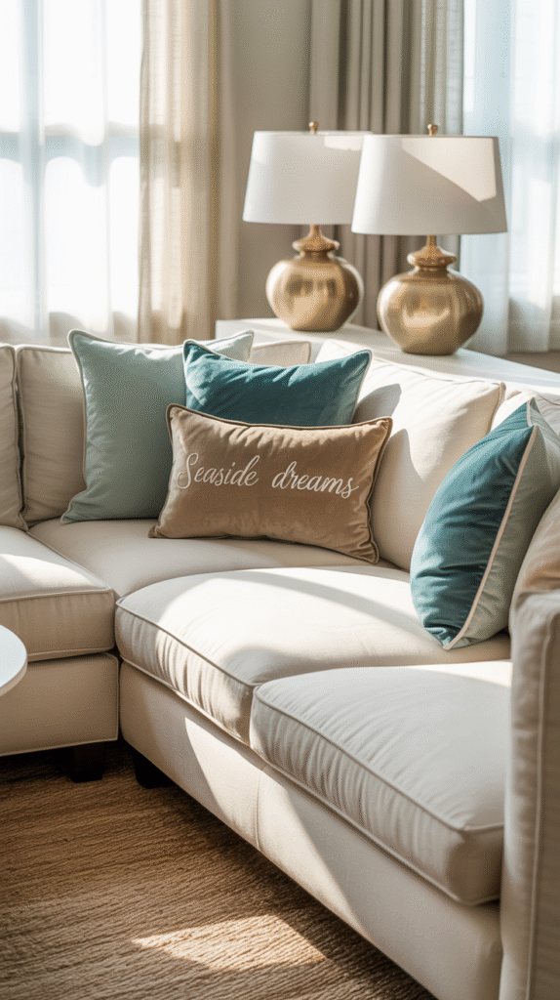
3. Bring In Coastal Scents
This one isn't visual at all, but scent does real work in how a space actually feels once someone sinks into it.
A candle with notes of sea salt, driftwood, or coconut, an essential oil diffuser running lavender, eucalyptus, or citrus, or a reed diffuser for a subtle all-day fragrance all layer the ocean-inspired feeling in without touching a single surface.
Light one, sit down on the sofa, and the room basically starts doing the rest of the work on its own.
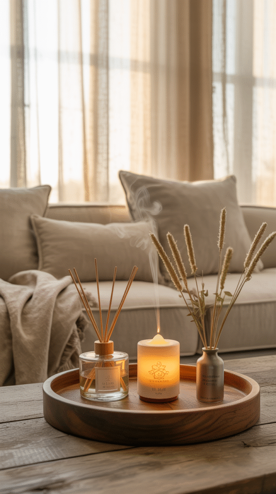
4. Mix Old and New for a Lived-In Feel
The effortless, relaxed quality you notice in real coastal homes usually comes from blending modern pieces with something worn-in, not from buying everything new at once.
Pair a modern slipcovered sofa with a weathered wood side table, set a vintage-style lantern next to a sleek glass vase, or combine an old framed map with a newer beachy print on the same gallery wall.
A little imperfection adds real soul. The room shouldn't look staged, it should feel like it's been slowly put together over time.
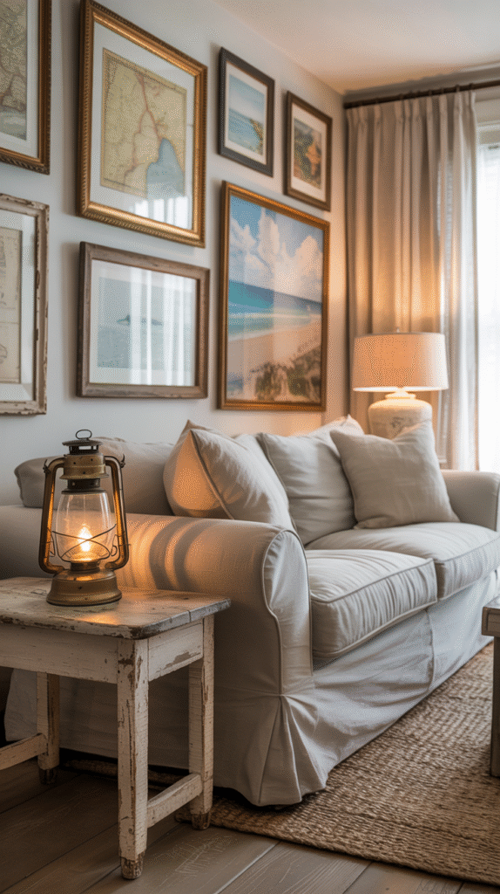
5. Layer in Soft, Breezy Textiles
Beach houses are masters of the curl-up-with-a-book feeling, and that comes almost entirely from how the fabrics layer together.
A chunky knit throw works even in summer, cotton or linen pillow covers in washed-out blues and neutrals keep the palette consistent, and a lightweight jute, sisal, or flatweave wool rug adds texture underfoot without piling on visual weight.
Bold patterns belong to a different style entirely. Here, soft texture and quiet pattern are what make the room feel like it just exhaled.
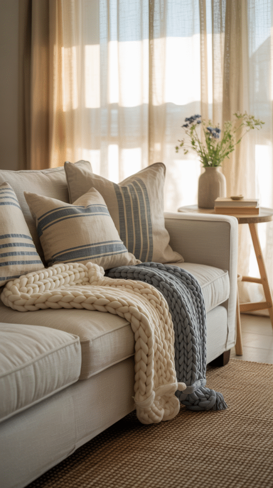
6. Go Big on Plants
Greenery does more for a coastal room than most people expect. It keeps the space feeling alive and fresh in a way that fakes that just-off-the-coast quality even indoors.
A palm tree or fiddle leaf fig brings drama, a snake plant or pothos covers the low-maintenance side of things, and an olive tree leans the whole look toward Mediterranean coastal instead of tropical.
Put them in textured pots, terracotta, woven baskets, or concrete all work, for a subtle upgrade that ties the greenery back into the rest of the room's materials.
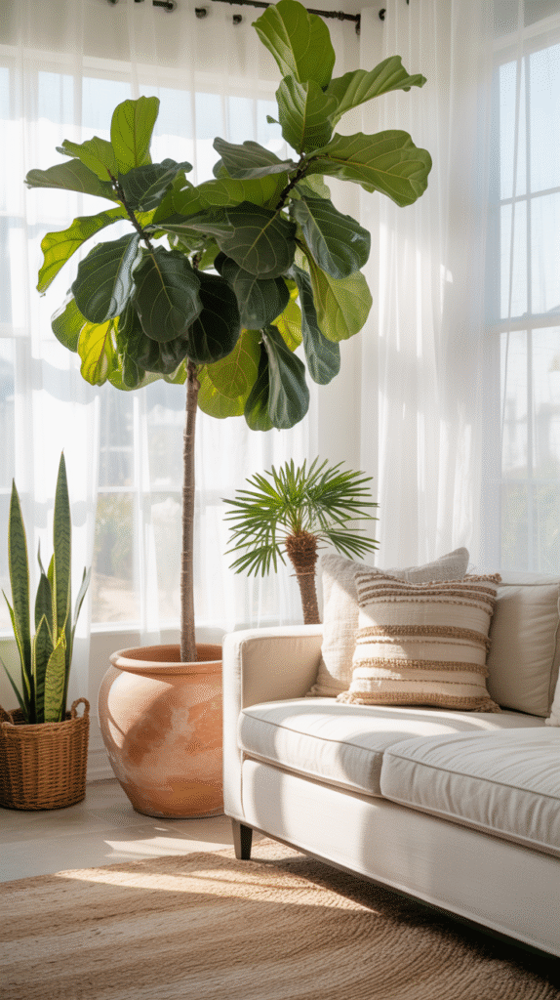
7. Accessorize Like a Beachcomber, With Restraint
This is where it's easiest to overdo it. The goal is a curated room, not one that looks raided from a souvenir shop.
Faux sea glass or coral pieces, a glass vase filled with sand or collected shells, and coastal artwork like watercolor seascapes or vintage travel posters all earn their place. Nautical throw pillows work too, but one or two is genuinely the limit.
Less really is more here. A single driftwood sculpture reads as chic, while a whole shelf of them starts looking like clutter fast.
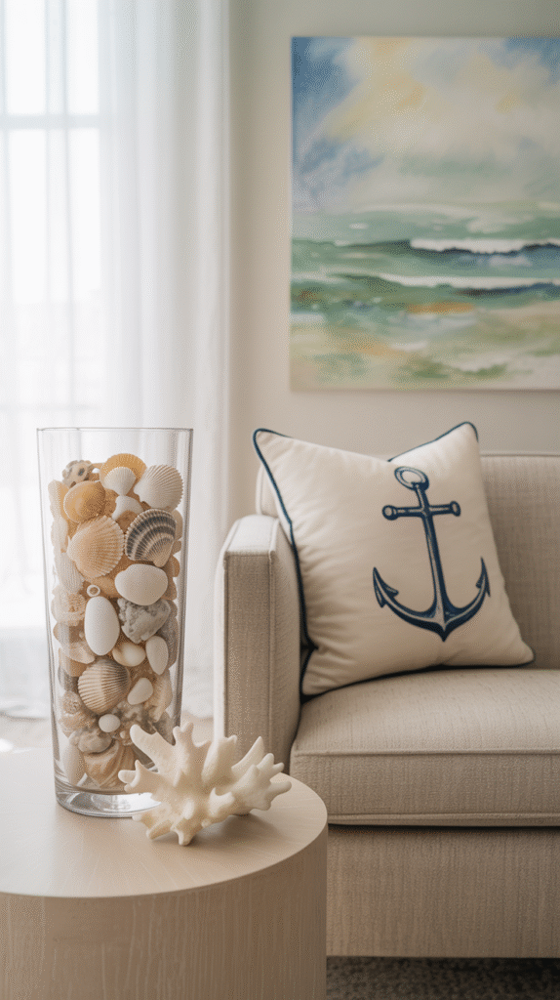
8. Choose Coastal Furniture Without Going Full Nautical
Nobody needs their living room to look like a beach-themed gift shop, so the anchors and ship wheels can stay out of it entirely. Furniture with relaxed lines does the job far better.
A slipcovered sofa in white or beige linen is comfortable and washable, a weathered wood coffee table should look sun-bleached rather than sad, and a rattan armchair adds texture and genuine vacation energy.
The style isn't about perfect symmetry or shiny finishes. It's about ease. A ding or two in the coffee table reads as character, not a flaw.
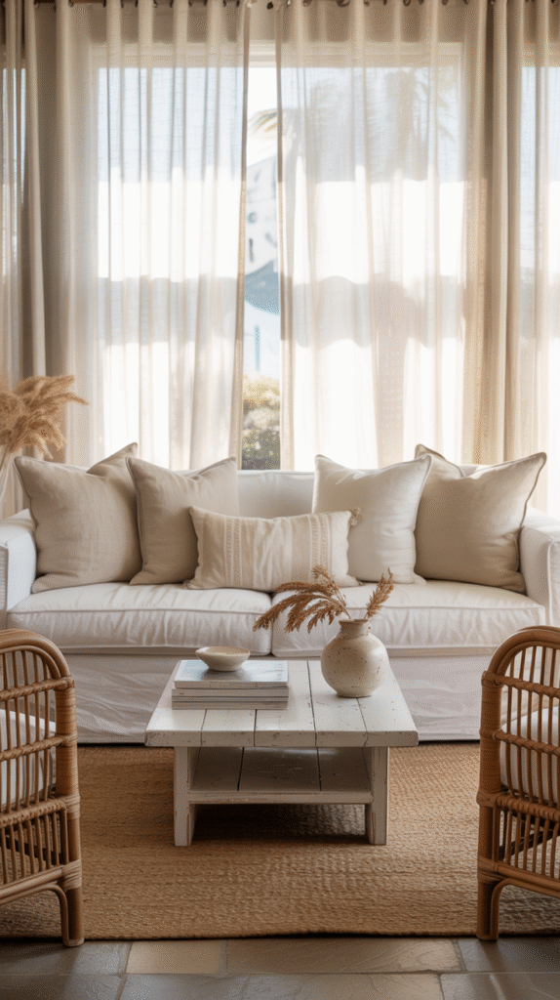
9. Maximize Every Bit of Natural Light
A coastal room can't live in a dark cave. Light is close to non-negotiable for the whole look to actually work.
Swap heavy drapes for sheer white curtains, or skip curtains altogether if privacy isn't a concern. A large round mirror, ideally framed in driftwood, bounces whatever light there is around the room, and keeping furniture low-profile stops anything from blocking it.
When the windows are small or the sun just isn't cooperating, warm lighting through rattan or rope lampshades fakes that golden-hour glow convincingly enough to matter.
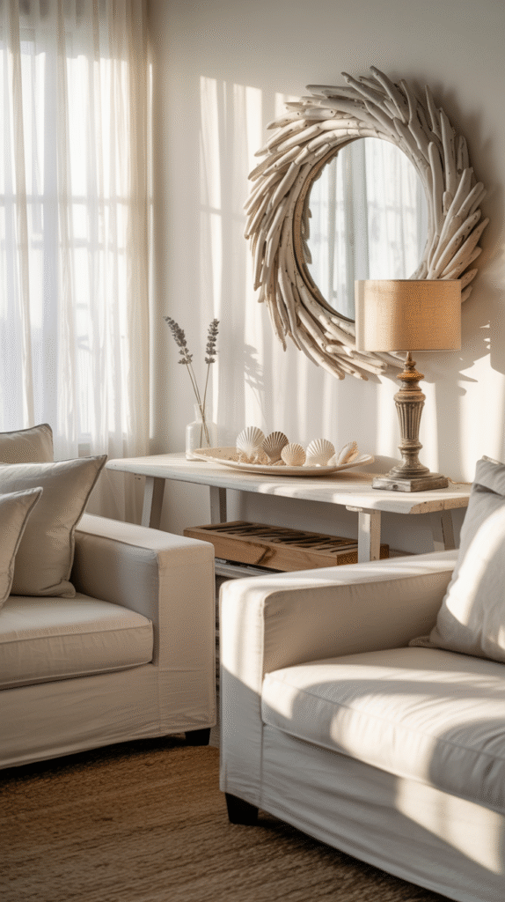
10. Lean on Natural, Texture-Rich Materials
The more natural materials that make it into the room, the more it reads as a genuine slice of coastal calm rather than a themed rental.
Rattan, wicker, and jute do most of the work for furniture and rugs, while driftwood or reclaimed wood suits a coffee table or open shelving nicely. Linen and cotton keep the fabrics breezy instead of heavy.
Seagrass baskets earn a spot too. They add the same natural texture as everything else while quietly hiding the clutter that would otherwise break the look.
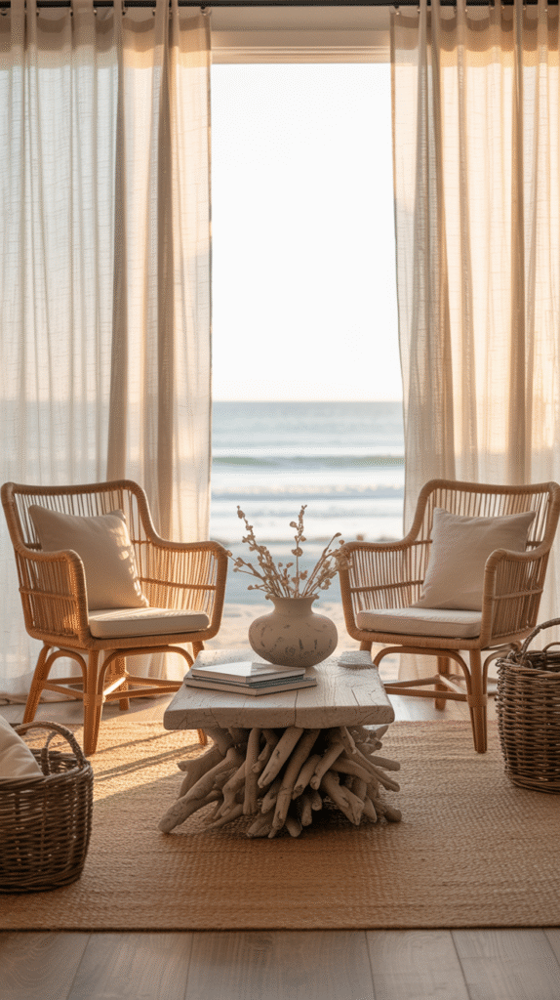
11. Start With an Ocean, Sky and Sand Palette
Color carries most of the coastal look before a single piece of furniture even gets involved. The goal is light, airy, and fresh, not a themed gift shop.
Lean on whites and creams for the base, a touch of seafoam or turquoise for a hint of color, and warm sandy beige to ground the room. A little navy works for contrast, but it shouldn't ever take over.
Painting the walls a soft white or pale gray does more for the room's sense of space than almost anything else on this list, making it feel instantly larger and more open.
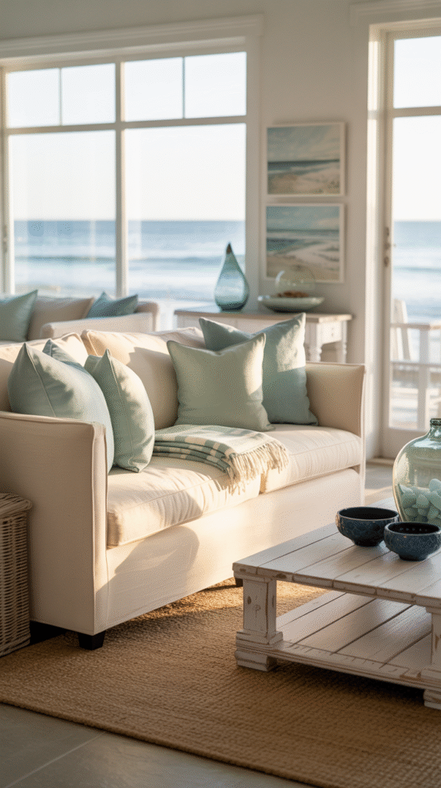
You Don't Need to Do All Eleven at Once
None of this requires tackling every idea at the same time. A sea-glass vase and a set of white curtains can start the shift just as well as a full slipcover-and-jute-rug overhaul. The goal is the feeling, not a checklist to clear.
Pick one or two changes that actually fit how the room gets used day to day, let the rest follow over time, and the coastal feeling builds on its own without ever looking forced.